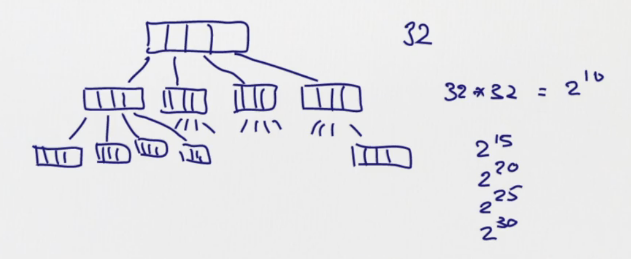

6.1 - Other Collections
so far: only seen List. → more (immutable) collections.
vector
List: is linear -- access to head is faster than middle or end element. Vector: better rand access performance.
represented as very shallow trees(32-split at each node)

Vector support similar operations as List (head, tail,map, fold) , except concat ::, instead Vectors have +: and :+:
x +: xscreate new vector with x in headxs :+ xcreate new vector with x in tail
implementation of :+: create copies

Seq
Seq is base class for Vector and List, Seq itself is subclass of Iterable.
Hierarchy of Iterables:

Array ans String
Array and String support same op as Seq, can implicitly be converted to seq when needed. But they are NOT subclasses of Seq as they come from java.
scala> val xs: Array[Int] = Array(1,2,3) xs: Array[Int] = Array(1, 2, 3) scala> xs map (2*_) res3: Array[Int] = Array(2, 4, 6) scala> val ys = "Hello" ys: String = Hello scala> ys filter (_.isUpper) res4: String = H
Range
represents a seq of evenly spaced integers.
represented as an obj with 3 values: lower bound, upper bound, step value.
3 op:
to: inclusiveuntil: exclusive-
by: step value1 to 6 // 1 2 3 4 5 6 1 until 6 // 1 2 3 4 5 1 to 6 by 2 // 1 3 5 6 to 1 by -2 // 6 4 2
More ops on Seq
xs exists pxs forall p-
xs zip ys: takes 2 seq, returns a single seq, each elem is a pairscala> List(1,2,3) zip Vector(2,3,4) res7: List[(Int, Int)] = List((1,2), (2,3), (3,4))
-
xs.unzip: reverse zip, return 2 lists -
xs flatMap f: apply f to all elements, and concat the resultsscala> "hello" flatMap (c => List('.', c)) res9: String = .h.e.l.l.o
-
flatten: flatten a seq of seq into just one seq...
xs flatMap f = (xs map f).flatten
The result is concated, instead of being a list of list.
xs.sum/xs.product: for numeric collectionxs.max/xs.min: an ordering must exist
Examples
- cartesen product: 1..M x 1..N:
(1 to M) flatMap( x => (1 to N) map (y => (x,y)) )
-
scalar of 2 vectors
def scalaProd(xs: Vector[Double], ys: Vector[Double]): Double = (xs zip ys) map (xy => xy._1 * xy._2).sum
alternative: use pattern matching in map (need to add braces {}!):
(xs zip ys) map ( {case(x,y) => x*y}).sum
- test isPrime for a number
def isPrime(n: Int): Boolean = (2 until n) forall (d => n%d!=0)
6.2 - Combinatorial Search and For-Expressions
goal: handle nested seq.
⇒ extend usage of higher order functions instead of using nested loops.
example:
given n, find all (i,j) st: 1<=j<i<=n, and i+j is prime.
(1 until n) flatMap ( i => (1 until i) map (j => (i,j)) ) filter ( {case(i,j) => isPrime(i+j)})
this works, but less understandable... ⇒ for expressions.
for/yield expressions
example: class of person
case class Person(name: String, age: Int)
To obtain names of persons over 20 years old:
persons filter (_.age>20) map (_.name)
equivalent to :
for (p <- person if p.age > 20) yield p.name
The for expression is similar to jave for-loop, except it builds a list of the results of all iterations.
for expression form:
for( s ) yield ewherescan contain generators and filters:
- generator:
p<-ewhereeis a collection,pis a pattern - filter:
if fwhere t is boolean expr
rewrite the prime sum example:
for{ i <- 1 until n j <- 1 until i if isPrime(i+j) } yield (i,j)
exercice: write the scalaProd using for expr:
def scalaProd(xs: Vector[Double], ys: Vector[Double]): Double = (for( (x,y) <- xs zip ys ) yield x*y ) sum
more on scala for expr: http://www.artima.com/pins1ed/for-expressions-revisited.html
6.3 - Combinatorial Search Example
goal: combine set and for-expr to solve the n-queens problem.
Sets
3 fundamental iterable collection types: seq, set, map.
- set support most operations on seq (c.f. doc on Iterable)
- sets are unordered
- set don't have dup elements
- contains:
s contains e
Example: N-Queens
8*8 chess board, 8 queens ⇒ places queens st: no two queen in same row/col/diag
algo: put one queen in each row (in the right column)
recursive solution: suppose already have solutions for first n-1 rows. represent each (partial)solution as a list of column index.
return all possible solutions (as a Set).
def queens(n: Int): Set[List[Int]] = {
def placeQueens(k: Int): Set[List[Int]] = ???// place first k rows
placeQueens(n)
}
Fill in the helper function:
def placeQueens(k: Int): Set[List[Int]] = { if (k==0) Set(List()) else for{ queens <- placeQueens(k-1) // queens(List[Int]) = one solution to k-1 c <- 0 until n if isSafe(c, queens) // if column c doesn't conflict with the partial solution queens } yield c::queens // the kth row solution is in head of list }
Now fill in the function isSafe that check if a column is valid wrt queens for above rows:
def isSafe(col: Int, queens: List[Int]): Boolean = {
val k = queens.length // current row is k
val indexedQueens = (k-1 to 0 by -1) zip queens // List[(row, col)]
indexedQueens forall {
case(r,c) => c!=col && k-r!=math.abs(c-col) }
}
Now the queens function will work.
Write another function to print the solution out:
def show(queens: List[Int]): String = { val lines = for (col <- queens.reverse) yield Vector.fill(queens.length("* ").updated(col, "X ").mkString "\n" + lines.mkString("\n") } (queens(4) map show) mkString "====\n"
6.4 - Maps
Map[Key, Value]
ex:
val romanNumerals = Map("I" ->1, "V" ->5, "X" -> 10)
val captial = Map("France" -> "Paris", "US" -> "Washington")
Maps are iterables and functions: maps Key to Value like a function call
ex. romanNumerals("I")
will throw NoSuchElementException if the key is not in map.
⇒ use get:
scala> captial("France")
res3: String = Paris
scala> captial get "France"
res4: Option[String] = Some(Paris)
scala> captial get "China"
res5: Option[String] = None
have a look at the Option type:
The Option Type
definition:
trait Option[+A] case class Some[+A](value: A] extends Option[A] object None extends Option[Nothing]
so the get function of map gives:
Noneif key is not in mapSome(x)if map associates key to x
since Some is case class, can use pattern matching to decompose.
def showCaptical(country: String) = captial.get(country) match{
case Some(cap) => cap
case None => "missing data"
}
Sorted and GroupBy
two useful SQL queries.
-
orderBy can be expressed using sortWith and sorted:
val fruit = List("apple", "pear", "orange", "pineapple") scala> fruit sortWith (.length < .length) res7: List[String] = List(pear, apple, orange, pineapple) scala> fruit.sorted res8: List[String] = List(apple, orange, pear, pineapple)
-
GroupBy(f): partition a collection into a map of collections according tofscala> fruit groupBy (_.head) res9: scala.collection.immutable.Map[Char,List[String]] = Map(p -> List(pear, pineapple), a -> List(apple), o -> List(orange))
map Example: polynomials
can be seen as map from exponents to coefficients:

⇒ represent polynm as maps
class Poly(val terms: Map[Int, Double]) {
def + (other: Poly) = new Poly(terms ++ // ++ on maps: will override older entries in terms!
(other.terms maps adjust)) // adjust defined below
def adjust(term: (Int, Double)):(Int, Double) = {
val (exp, coeff) = term
terms get exp match{
case None => Pair(exp, coeff) // or write: exp -> coeff
case Some(coeff1) => Pair(exp, coeff+coeff1)
}
}
override def toString =
(for( (exp, coeff) <- terms.toList.sorted.reverse) yield coeff+"x^"+exp) mkString "+ "
}
default values
withDefulatValue: makes a map into a total map
rewrite the poly example:
class Poly(terms0: Map[Int, Double]) { val terms = terms0 withDefaultValue 0.0 def + (other: Poly) = new Poly(terms ++ // ++ on maps: will override older entries in terms! (other.terms maps adjust)) // adjust defined below def adjust(term: (Int, Double)):(Int, Double) = { val (exp, coeff) = term exp -> (coeff + terms(exp)) } override def toString = (for( (exp, coeff) <- terms.toList.sorted.reverse) yield coeff+"x^"+exp) mkString "+ " } }
change to variable parameter for better constructor calling: add another constructor
def this(bindings: (int, Double)*) = // bindings is s sequence this(bindings.toMap)
Exercie: re-implement the + using foldLeft :
def + (other: Poly) =
new Poly( (other.terms foldLeft terms)(addTerm) )
def addTerm(terms:Map[Int, Double], term: (Int, Double)): Map[Int, Double] = {
val (exp, coeff) = term
terms + ( exp -> (coeff + terms(exp)) ) // map + (k,v) updates the map
}
6.5 - Putting the Pieces Together: T9 keyboard mnem
convert a seq of numbers to a scentence
val mnem = Map('2'->"ABC", '3'->"DEF", 4->"GHI", '5'->"JKL",
'6'->"MNO", '7'->"PQRS", '8'->"TUV", '9'->"WXYZ" )
val in = Source.fromURL("...")
val words = in.getLines.toList // dictionary: list of valid words
goal: design a translate(phoneNumber) that produces all phrases of words that can serve as mnemonics(助忆) for a phone number.
Step 1: invert the mnem map to a map from A~Z to 2~9:
val charCode: Map[Char, Char] = for ( (digit, str) <-mnem; ltr<-str) yield ltr->digit
Step 2: map a word to the string it represents, ex. "java"->"5282"
def wordCode(word: String):String =
word.toUpperCase map charCode
Step 3: maps from digit string to all possible valid strings, ex. "5282"->List("java", "kata",...) ⇒ just a groupby!!
val wordsForNum: Map[String, Seq[String]] =
words groupBy wordCode
→ Error: key not found: "-", some words contains a "-"... → drop such words...
val words = in.getLines.toList filter (wd => wd forall (ch => ch.isLetter))
Step 4: return all ways to encode a number as a list of words → recursive, recurse on the nb of first words~
def encode(number: String): Set[List[String]] = { if(number.isEmpty) Set(List()) else{ val phraseList = for{ split <- 1 to number.length // the first word in phrase uses numbers[1:split] firstWd <- wordsForNum[ number.take(split) ] followingWds <- encode(number.drop(split)) } yield firstWd::follwingWds phraseList.toSet } }
⇒ error in the line with wordsForNum: key not found...
⇒ wordsForNum["7"] will give error
⇒ make the wordsForNum a total map, using withDefaultValue
val wordsForNum: Map[String, Seq[String]] =
(words groupBy wordCode) withDefaultValue( Seq() )
Step 5: return strings (instead of List[String])
def translate(number: String): Set[String] = {
encode(number) map (_.mkString(" "))
}
summary:
Conclusion


Comments !